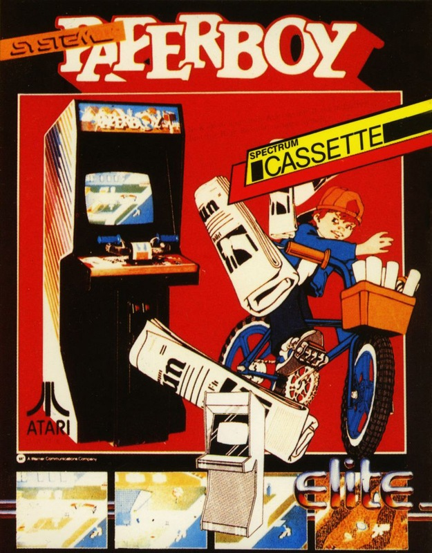
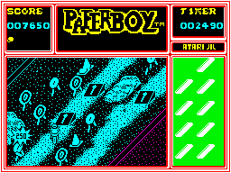
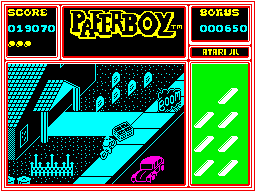

Paperboy


{kind=link}

| Publisher: | Elite |
| Price: | £7.95 |
| Year: | 1986 |
| Source: | CRASH, Issue 33 |
In Elite’s conversion of the arcade game Paperboy it’s up to you, as an all American skoolkid, to deliver the early morning newspapers fighting against fantastic odds. Negotiating your BMX bike around what seems to be a rather unsavoury neighbourhood, hazards have to be avoided — but lots of points are waiting to be won for accurate lobbing of newspapers.

town. 250 points have just been
awarded for a direct hit on a
target, the paperbag is full
and there are ramps ahead...
Certain households on your round don’t order the Daily Sun, the paper which you are so diligently trying to deliver. This is sad, but you can get your own back on these non-subscribers. Pedalling through the diagonally scrolling landscape, points can be collected by bunging a newsprint missile through a window on a house with a dark door — the occupants don’t take the Sun. Well-aimed newspapers can result in broken window panes, chopped up tomb stones and ruffled dustbin lids, too. If you’re feeling particularly vindictive then grannies can be zapped out of their bath-chairs as they take the morning air, boys can be knocked off their mopeds and flowers flattened.
Households that order the newspaper get special treatment — their newspapers must be accurately thrown so that they land in the mail box. Two hundred and fifty points are scored for each paper safely delivered. The papers in your delivery bag are displayed on a panel to the right of the screen, and extra ammo can be collected by cycling over the boxes of newsprint dotted around the pavements.

bomb explodes. Fortunately the
bundle of replacement papers is
unscathed. Nasty neighbourhood this!
But there’s more to being a paperboy than just chucking papers around the town. Careful cycling is called for to negotiate a variety of obstacles including dustbins, fire hydrants and garden ornaments. And then there’s the people... old folk seem to walk into your path deliberately; workmen can’t hear you because of their ear-plugs, and have to be avoided. Skateboarders can be fairly lethal as they scoot around at breakneck speed, and runaway tyres and exploding bombs also crop up from time to time. Contact with the nasties results in a crash and the loss of one of your five lives — as in the original, a scrolling message reminds you what a silly boy you have been...
Each day of the week, the paper round has to be attempted before paperboy can go out to play on the BMX track at the end of town. Bonus points can be collected for hitting targets dotted around the BMX course with a well-aimed newspaper.
At the end of the day’s work the paper shop prepares a report on progress. For every paper wrongly delivered, a house cancels its order and if too many of the houses cancel it’s the sack! However, on subsequent rounds if all the papers are correctly delivered you win back one customer, but the game gets that little bit harder on subsequent days. It really is mean on these streets...
CRITICISM
“Paperboy is one of the arcade games that just didn’t appeal to me. Elite, as usual, have done an excellent job of converting from the original — the game is quite pretty, and the action is generally fast and furious. The graphics are carefully detailed, scrolling smartly in 3D, and the characters are well animated. The colour is unfortunately in boring old blue ’n’ black-o-vision with a little bit of magenta thrown to add a touch of colour clash. The sound is good, with lots of spot effects and a couple of tunettes. I didn’t find this game as addictive or as playable as it should have been, but it certainly is worth a look if you enjoyed playing it in the arcades.”
“This game is well wicked. The graphics are a bit of a wimp-out on the part of Elite, but the game has a strange amount of addictivity to it. Though losing a lot in comparison to the original arcade version, Paperboy offers a good deal in the way of long term entertainment. Things like the racetrack and the old grannies make the game all the more fun to play, and the level of frustration is just right. When a drunkard comes wobbling down the road and knocks you off your bike, the urge to try again is still there. Though not as good as the Ghosts and Goblins and Bombjack conversions, Paperboy is still a pretty good game, and worth the asking price.”
“Although the game doesn’t contain lots of different things to do, Paperboy, like most of the Elite games, is fiendishly addictive — and once you’ve started there’s no stopping. The graphics are extremely well drawn, and despite them all being very small, most of them are recognisable. I felt more use could have been made of the Spectrum colours. Control was quite hard to get used to at first, but after realising that you can’t brake and turn at the same time, things became quite fluent. The presentation is quite bare, apart from the high-score table and the very well drawn front page of the Daily Sun. The sound was more informative than good. I’m sure that anyone buying Paperboy will play it for hours — but come away with the feeling ‘not much to that!’”
COMMENTS
| Control keys: | Q accelerate, A brake, O left, P right, N throw paper |
| Joystick: | Kempston, Cursor, Interface 2 |
| Keyboard play: | Fast and responsive |
| Use of colour: | Monochromatic, for the most part, so as to avoid clashes |
| Graphics: | Nice characters, with fair scrolling |
| Sound: | Tunes, with the usual spot effects |
| Skill levels: | One |
| Screens: | Scrolling township |
| General rating: | Another slick, playable conversion from Elite |
| Use of computer: | 84% |
| Graphics: | 86% |
| Playability: | 89% |
| Getting started: | 91% |
| Addictive qualities: | 87% |
| Value for money: | 86% |
| Overall: | 88% |